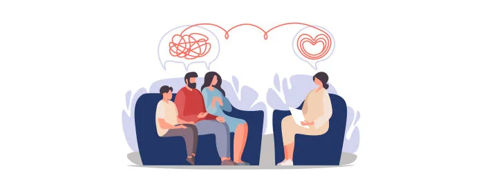

La terapia familiar es una modalidad de tratamiento psicológico que aborda las relaciones y dinámicas de convivencia dentro del núcleo familiar.
La terapia individual es un proceso psicoterapéutico personalizado en el que un paciente trabaja directamente con un psicólogo o terapeuta en un espacio seguro, confidencial y libre de juicios.
La terapia psicológica es un proceso profesional de acompañamiento y tratamiento diseñado para ayudar a las personas a comprender, regular y modificar sus emociones, pensamientos y conductas.
Una auditoría de seguridad es una evaluación formal y sistemática de los sistemas, la infraestructura y las políticas de una organización para detectar vulnerabilidades y asegurar el cumplimiento normativo.
La ingeniería social es la manipulación psicológica de las personas para que revelen datos confidenciales, y el phishing controlado es una simulación autorizada de estos ataques para medir y mejorar la seguridad humana en una organización.
Un CISO Virtual (vCISO) es un director de seguridad de la información externo que ofrece liderazgo estratégico a tiempo parcial, reduciendo costos frente a un ejecutivo de planta.